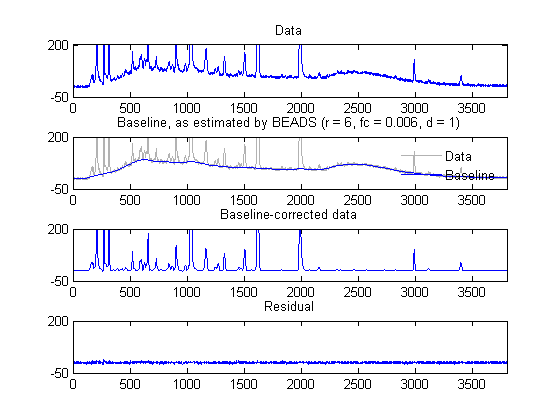
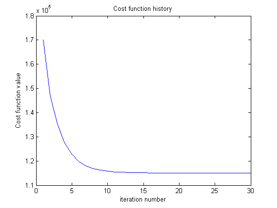

Example: Chromatograms BEADS (Baseline Estimation And Denoising with Sparsity)
This example illustrates the use of BEADS to estimate and remove the baseline of chromatogram series.
Reference: 'BEADS: Joint baseline estimation and denoising of chromatograms using sparse derivatives'
Xiaoran Ning, Ivan Selesnick, Polytechnic School of Engineering, New York University, Brooklyn, NY, USA
Laurent Duval, IFP Energies nouvelles, Technology Division, Rueil-Malmaison, France, Universite Paris-Est, LIGM, ESIEE Paris, France
2014
Contents
Start
clear all addpath data load data/noise.mat; load data/chromatograms.mat; whos
Name Size Bytes Class Attributes X 4000x8 256000 double noise 4000x1 32000 double
Load data
% Load data and add noise.
y = X(:, 3) + noise * 0.5;
N = length(y);
Run the BEADS algorithm
% Filter parameters fc = 0.006; % fc : cut-off frequency (cycles/sample) d = 1; % d : filter order parameter (d = 1 or 2) % Positivity bias (peaks are positive) r = 6; % r : asymmetry parameter % Regularization parameters amp = 0.8; lam0 = 0.5*amp; lam1 = 5*amp; lam2 = 4*amp; tic [x1, f1, cost] = beads(y, d, fc, r, lam0, lam1, lam2); toc
Elapsed time is 0.222659 seconds.
Display the output of BEADS
ylim1 = [-50 200]; xlim1 = [0 3800]; figure(1) clf subplot(4, 1, 1) plot(y) title('Data') xlim(xlim1) ylim(ylim1) set(gca,'ytick', ylim1) subplot(4, 1, 2) plot(y,'color', [1 1 1]*0.7) line(1:N, f1, 'LineWidth', 1) legend('Data', 'Baseline') legend boxoff title(['Baseline, as estimated by BEADS', ' (r = ', num2str(r), ', fc = ', num2str(fc), ', d = ', num2str(d),')']) xlim(xlim1) ylim(ylim1) set(gca,'ytick', ylim1) subplot(4, 1, 3) plot(x1) title('Baseline-corrected data') xlim(xlim1) ylim(ylim1) set(gca,'ytick', ylim1) subplot(4, 1, 4) plot(y - x1 - f1) title('Residual') xlim(xlim1) ylim(ylim1) set(gca,'ytick', ylim1) orient tall print -dpdf example
Display cost function history
figure(2) clf plot(cost) xlabel('iteration number') ylabel('Cost function value') title('Cost function history')